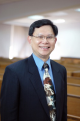

《高舉基督，傳揚真理(主題經文：約二十31)》 主題講員：賴建國牧師
简介: 賴建國博士，畢業於國立台灣大學（學士、碩士），蒙召後在中華福音神學院取得道學碩士，美國三一福音神學院（Trinity Evangelical Divinity School）神學碩士和哲學博士，主修舊約。曾任中華福音神學院院長暨舊約教授，中國神學研究院訪問教授，建道神學院駐院學者，現任創欣神學院舊約教授。近年擔任港九培靈會、美國中西部夏令會、舊金山灣區培靈會、加拿大恩福門訓營、北歐基督徒夏令會等營會，及好消息頻道（Good TV）空中聖經學院講員。傳道牧養多年，蒙主使用，著作有《天道聖經註釋－出埃及記》、《五經導論》、《舊約中的彌賽亞預言》等，均由天道書樓出版。
2016年8月4日（星期五）下午3:00-5:00 主題信息《一》： 【生命轉化 】 經文：約二1∼10
2016年8月4日（星期五）晚上7:00-8:30 主題信息《二》： 【永不再渴 】 經文：約四1∼26
2016年8月5日（星期六）早上8:45-10:00 主題信息《三》： 【生命的糧 】 經文：約六1∼15
2016年8月5日（星期六）晚上7:00-8:30 主題信息《四》： 【作我牧者 】 經文：約十1∼18
2016年8月6日（主日）早上8:45-11:30 （聖餐聚會） 主題信息《五》： 【十架榮耀 】 經文：約十二20∼36